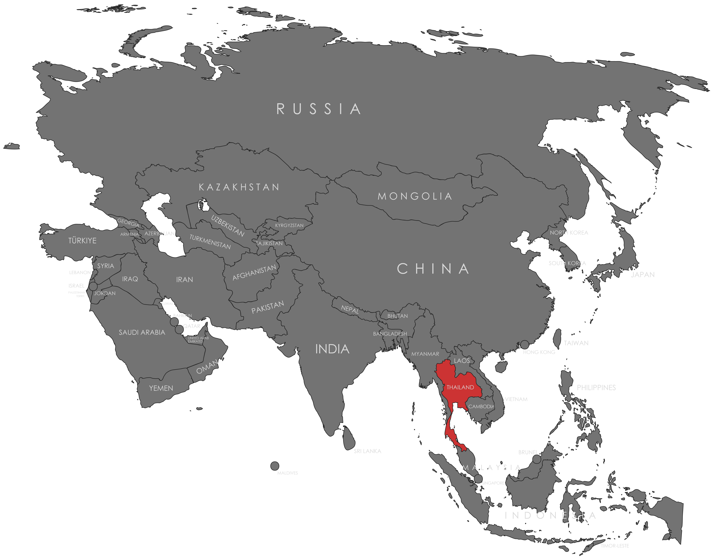

Specifications
- Local Name: ธงไตรรงค์ (Thong Trairong) — "Tricolor Flag"
- Proportion: 2:3
- Name of the Flag: Thong Trairong
- Adopted: September 28, 1917
Symbolism
- Red: The Thai nation and the people
- White: Religion, purity, and the central role of Buddhism
- Blue: The monarchy and unity, chosen to honor WWI Allies
- Five horizontal stripes represent the pillars of Thai identity: nation, religion, king
- Central blue stripe is double thickness to emphasize the monarchy
Colors:
Shapes / Symbols:
Meaning / Special Display
- Displayed prominently during royal ceremonies and national holidays to honor the monarchy.
- Raised at government buildings and temples as a symbol of national unity.
- Half-mast displays are used during national mourning periods or the passing of royal family members.
Description
- The Thong Trairong reflects the harmony between the Thai people, their Buddhist heritage, and the monarchy.
- The bold blue stripe symbolizes the stability and strength of the royal institution.

Return to Gallery